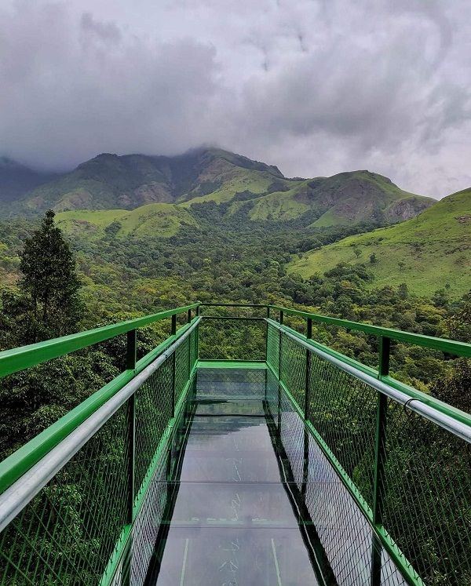
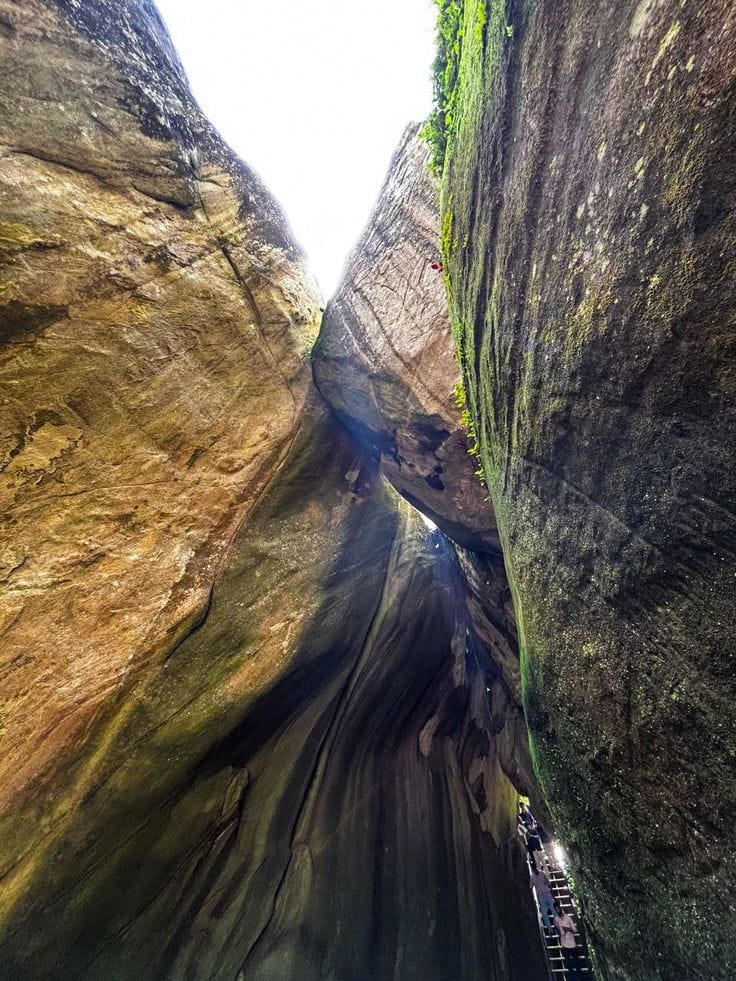
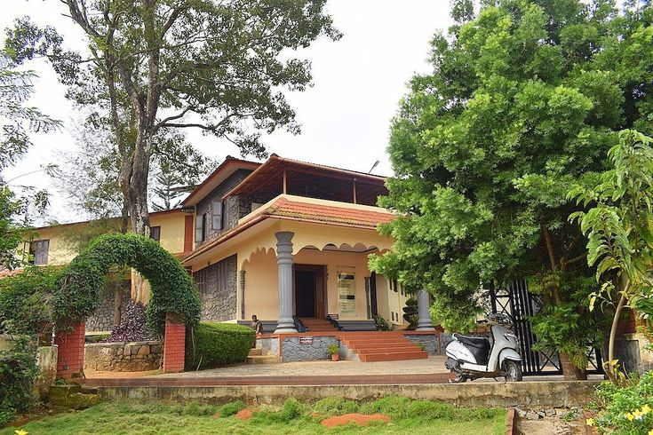
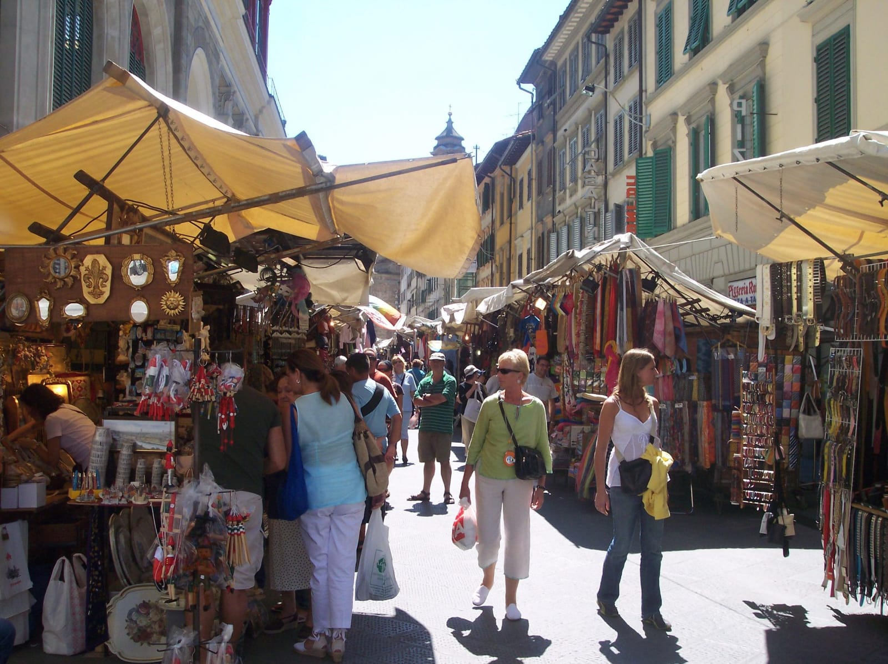
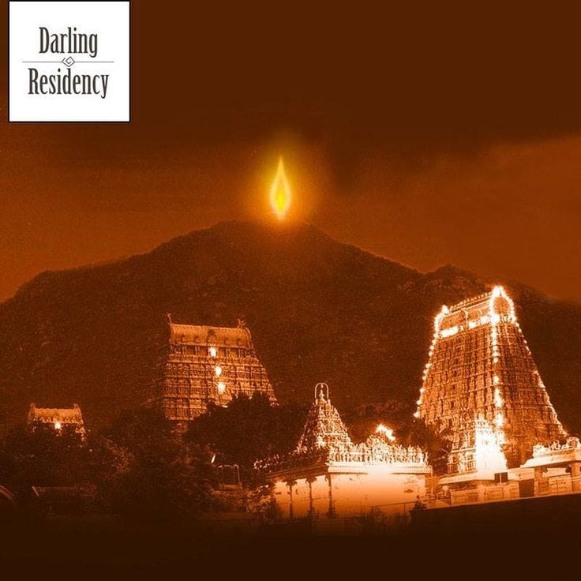
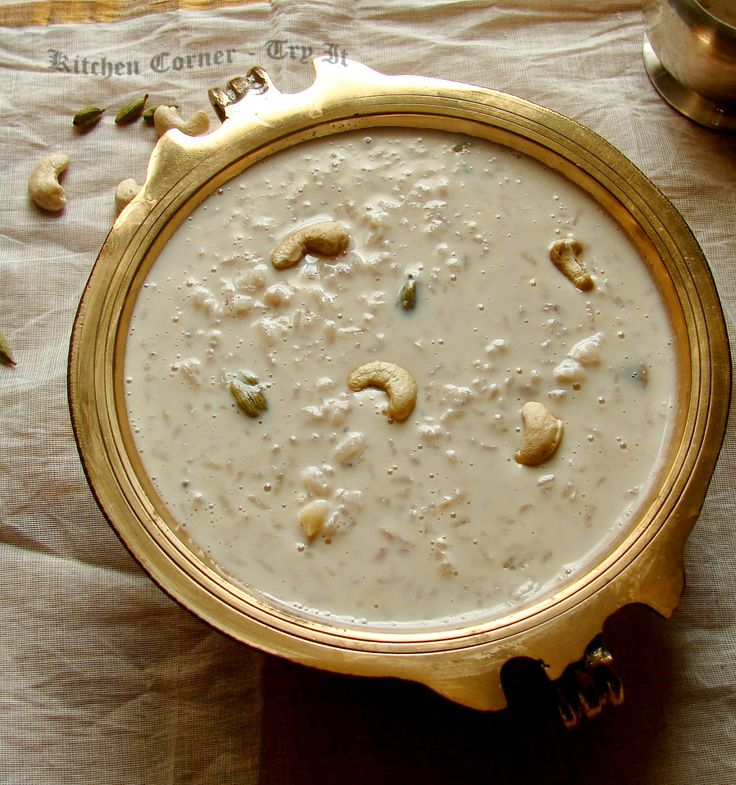

Wayanad Over_all View

Wayanad is a scenic district in Kerala, known for its misty hills, waterfalls, wildlife, and spice plantations. It is a perfect destination for trekking, nature exploration, and cultural experiences.
Peaceful Nature Spot (Edakkal Caves)

Edakkal Caves are famous for their ancient rock carvings and breathtaking views of the surrounding hills. They are a blend of history and natural beauty.
Historical Place (Wayanad Heritage Museum)

The Wayanad Heritage Museum showcases artifacts, tribal relics, and historical items, offering insights into the region’s rich cultural past.
Local Market (Sultan Bathery Market)

Sultan Bathery Market is a bustling place where visitors can buy spices, honey, handicrafts, and local produce, reflecting Wayanad’s vibrant lifestyle.
Famous Festival (Karthigai Festival)

Karthigai Festival is celebrated in Wayanad with lamps, rituals, and cultural programs, adding to the district’s spiritual charm.

Bamboo Rice Payasam is a unique dessert from Wayanad, made with bamboo rice, jaggery, and coconut milk. It is a nutritious and traditional delicacy of the region.